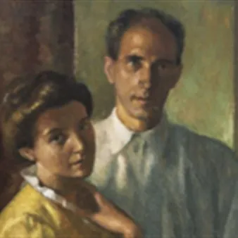

da ven 4 dic a dom 27 dic
Eventi collaterali e visite guidate alla mostra "Carlo & Mirella Sbisà. Amore & Arte"
Circa 200 opere, alcune inedite, rare o poco conosciute, raccontano il dialogo artistico tra Carlo Sbisà e Mirella Schott Sbisà. Dai ritratti e dagli affreschi di Carlo all’immaginario narrativo e onirico delle incisioni di Mirella, fino alla ricerca d’avanguardia che i due…
 Indicazioni
Indicazioni
- Costi e prenotazioni
- Costo non indicato · Prenotazione non indicata
- Programma
- Programma da verificare. Apri la fonte ufficiale per orari e possibili aggiornamenti.
- In caso di maltempo
- Nessuna indicazione specifica pubblicata.
- Note
- Acquisito automaticamente dalla fonte.
L’EVENTO
Descrizione completa
Circa 200 opere, alcune inedite, rare o poco conosciute, raccontano il dialogo artistico tra Carlo Sbisà e Mirella Schott Sbisà. Dai ritratti e dagli affreschi di Carlo all’immaginario narrativo e onirico delle incisioni di Mirella, fino alla ricerca d’avanguardia che i due condivisero nella ceramica del dopoguerra.
EVENTI COLLATERALI
ideati, curati e condotti da Marianna Accerboni
venerdì 4 dicembre - ore 18
Carlo Sbisà e Arturo Nathan : Lettere d'arte e di vita dall’internamento con gli studiosi Andrea Del Ben e Lorenzo Nuovo, autori del volume Arturo Nathan. Lettere all’amico Carlo Sbisà 1940 – 1943;
domenica 13 dicembre - ore 18
Una famiglia di artisti : incontro con Paola Sbisà, figlia di Carlo e Mirella, che, intervistata dalla curatrice, rievocherà il clima famigliare, la storia dei genitori e la vita trascorsa assieme;
sabato 19 dicembre - ore 18
Franco Vecchiet, incisore, xilografo, pittore e docente di grafica della Scuola Libera dell’Acquaforte dell’Università Popolare di Trieste, rievocherà le vicende della storica istituzione, la cui creazione fu promossa da Carlo Sbisà nel 1959 e da lui diretta fino alla morte;
domenica 27 dicembre - ore 11
incontro con la scrittrice, giornalista e saggista romana Mariù Safier, per anni voce e volto della Rai, che presenterà il suo ultimo romanzo, La steccaia , che ci parla dell’identità femminile nel secolo scorso anche alla luce della Shoah;
VISITE GUIDATE E LABORATORI
Dicembre
ven 4 - ore 19 visita guidata
sab 5 - ore 18 visita guidata
dom 6 - ore 16.30- 19 visita guidata e laboratorio
ven 11 - ore 18 visita guidata
dom 13 - ore 19 visita guidata
sab 19 - ore 19 visita guidata
dom 20 - ore 18 visita guidata
dom 27 - ore 12 visita guidata
Dopo ogni visita guidata verrà offerta una degustazione con i vini pregiati del territorio.
Sono previsti laboratori di disegno e pittura per adulti e bambini, ispirati alle opere esposte e diretti dalla curatrice, e un premio per i migliori lavori selezionati.
Info e prenotazioni
+39 335 6750946 / marianna.accerboni@gmail.com
IL PROGRAMMA
Programma e orari
Appuntamenti raccolti dalle fonti elencate. Dove manca un orario, non è ancora disponibile in questa scheda.
Programma pubblicato
- Dal 2026-12-04 al 2026-12-27
INFORMAZIONI UTILI
Prima di partire
- Controllare la fonte prima di partire.
ORGANIZZAZIONE